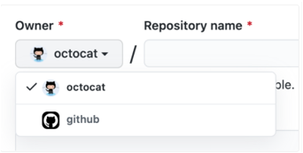

1. Puede usar Jekyll para crear un sitio de páginas de GitHub en un repositorio nuevo o existente
En la esquina superior derecha de cualquier página, use el menú desplegable y seleccione Nuevo repositorio.
2. Utilize el menú desplegable Propietario y seleccione la cuenta de la que desea poseer el repositorio.

3. Escriba un nombre para su repositorio y una descripción opcional. Si está creando un sitio de usuario u organización, su repositorio debe tener el nombre user.github.io
4. Elija una visibilidad de repositorio
5. Posteriormente elejimos un tema de nuestro agrado en la pagina oficial de jekyll themes.
Lo traemos a nuestracuenta aplicanfo un fork
6. Por ultimo solo seguimos las indicaciones que nos brinda el readme del proyecto, si se sigue correctamente las instrucciones no deberia de haber problemas.
7. Para ver su sitio publicado, en "Páginas de GitHub", haga clic en la URL de su sitio.
8. Este seria el resultado final, que en mi caso he elegido el tema *Parchment*